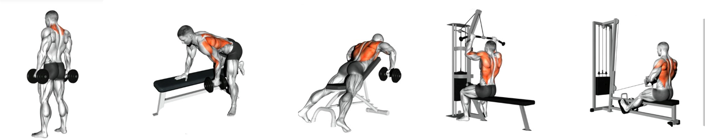
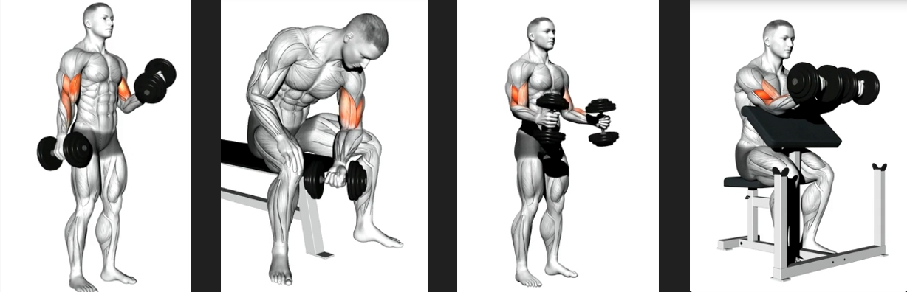
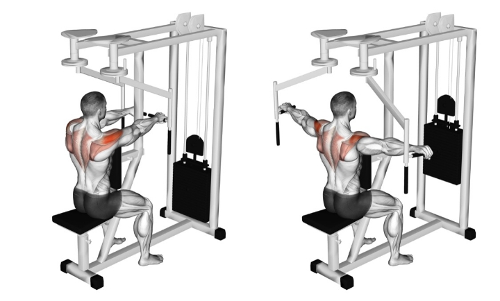

*الظهر وهو يتكون من العديد من المجموعات العضلية الكثيفة ويمكن تلخيصه في:
سحب أرضي لعضلات الآبر باك سحب عالي لعضلات اللاتس
تمرين لعضلات الترابيس المتوسطة
سحب بالدمبل للاتس من زاوية اخري
ترابيس (شارحة نفسها)

*الباي وهي معكوسة التراي ولها رأس طويلة وقصيرة:
بريتشر كيرل بالدامبل للراس الطوسة للباي
هامر للبريدكياليس تحت الباي
تركيز للباي
تبادل باي

*الكتف الخلفي وهي عضلة وحيدة
